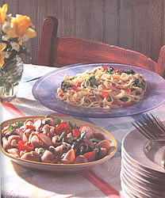
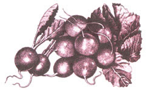

NATURAL KITCHEN
MOTHER'S KITCHEN
Experiment with your garden veggies for lift and quick warm-weather meals.
I don't remember what year (or even what decade) it was that we began to refer to spaghetti as pasta. Growing up in the "spaghetti-os" era in a non-Italian family meant believing that anything vaguely resembling pasta drowned in a tomato-based sauce was classified as "spaghetti." (If you were under the age of eight, it was pronounced "s'getti") Fortunately, we have evolved to the point where even the corner grocer carries a wide variety of pastas from which to choose. No longer considered a fattening food, pasta has become the "in" complex carbohydrate of the 90s. It's a good stuff-yourself food because complex carbohydrates are rarely stored as fat since they're the body's main source of energy. If you use a whole-grain pasta you will add fiber and B vitamins, which is even better, not to mention that pasta is fast, easy, and cheap.
Summer is the perfect time to experiment with your garden vegetables and favorite pasta for some light, healthy meals on hot evenings. My Italian friends insist that there are pasta "rules," such as using a certain pasta depending on the type of sauce. I do respect these rules but rarely follow them since the meal is dependent upon what's in the pantry a half hour before dinner. I once sautéed some baby garden beets with leftover linguine, garlic, and grated ginger for my lunch. My son's remark, as he passed through the kitchen was, "Mom, that's totally gross." At last. A meal all to myself. Just remember that the secret to a low-fat, healthier pasta dish is in the sauce. A plateful of pasta (about 4 ounces), minus the sauce, contains only 4 grams of fat. Instead of using hefty amounts of cream and olive oil, substitute chicken broth, wine, and tomatoes. Use fresh herbs, hot peppers, garlic, and just a little extra-virgin olive oil to give the pasta added flavor.
If pasta is overcooked it absorbs too much water and becomes mushy. When it is cooked "al dente," meaning "to the tooth;" it's still chewy without being undercooked. For the best tasting pasta these techniques are advisable:
1 tablespoon extra-virgin olive oil
1/4 teaspoon jalapeño or serrano pepper - seeded and minced (use 1/2 teaspoon if you like it a little hotter)
1 small sweet red pepper - seeded and thinly sliced
2 small yellow summer squashes - halved lengthwise and thinly sliced diagonally (2 cups)
8 ounces linguine
1/2 cup canned evaporated skim milk
1/2 teaspoon salt
freshly ground pepper
1 1/2 cups broccoli tops - chopped, but not too small
1 cup fresh snow peas (optional)
1/2 teaspoon grated lemon rind
1/3 cup freshly grated Parmesan or Romano cheese (I use Pecorino Romano for more flavor)
1/3 cup fresh basil - sliced (cut with scissors) or chopped Italian parsley. During winter months when fresh herbs are not available, use fresh parsley instead
Put water on to boil for the pasta. Sauté the garlic and hot pepper in the oil for about 30 seconds. Add the red pepper and summer squash. Sauté on medium-high heat about 2 - 2 1/2 minutes, stirring often. Meanwhile put linguine in boiling water to cook. To the pepper/squash mixture add the evaporated milk, salt and pepper and let it cook a minute or so. Add the broccoli and snow peas and simmer on medium heat until the vegetables are just done but crisp (about 1 1/2 minutes). Drain the linguine when done, and in a large bowl toss the linguine, vegetables, lemon rind, cheese and finally basil. Serve topped with extra cheese if desired.
3 cups uncooked fusilli (spirals) or seashell pasta (I use a whole-grain pasta)
1 tablespoon olive oil
1 cup fresh snow peas - cut diagonally into thirds
4 medium radishes - trimmed and thinly sliced
4 green onions - finely chopped
1/4 cup calamata (Greek) black olives - pitted and diced
1/2 cup (4 oz) feta cheese - cut into small cubes
2 tablespoons fresh oregano* - finely chopped (or 2 teaspoons dried)
2 tablespoons fresh mint* - finely chopped (or 2 teaspoons dried)
10-12 cherry tomatoes - halved
Dressing
2 large cloves garlic - minced
1 tablespoon olive oil
2 teaspoons balsamic or red wine vinegar
1/4 cup lemon juice
1 teaspoon Dijon mustard
1/8 teaspoon cayenne pepper
salt and freshly ground pepper
Boil the pasta for 4-6 minutes. Drain and rinse with cold water. Shake out excess water. Pour pasta into a large bowl and toss with the olive oil. Refrigerate while preparing rest of salad. In a vegetable steamer steam the snow peas for about 1 1/2 minutes - they should still be crisp. Plunge briefly into cold water, drain, and set aside. Chop rest of ingredients. Whisk dressing in a small bowl, then toss with all salad ingredients except the cherry tomatoes. Because the tomatoes will become soggy after being cut and refrigerated, they should be added just before serving.
* Please use fresh herbs or parsley.
This is a good low-fat pasta to make when you have leftover corn-on-the-cob and a garden full of greens.
8 ounces vermicelli or angel hair pasta
1 teaspoon olive oil
3 large cloves garlic - peeled and minced
1/2 jalapeño pepper - seeded and minced (1/2 teaspoon)
3/4 cup red onion - chopped
1 teaspoon ground cumin
1 1/2 cups fresh corn - cut off the cob (about 3 - 4 ears)
2 cups fresh garden spinach or arugula leaves-cut into thin strips
2 medium-sized fresh tomatoes - cored and coarsely chopped
2 tablespoons balsamic vinegar or red wine vinegar
1 teaspoon sugar
1 teaspoon freshly squeezed lemon juice
salt and freshly ground pepper
1/2 cup cilantro - chopped, or fresh basil, cut into strips
Bring pasta water to a boil and add salt. Begin cooking the pasta. In a large nonstick skillet sauté the garlic, hot pepper, and onion in oil on medium-high heat for a few seconds, until mixture wilts. Push to the side of the skillet and add the corn, letting it sit in the pan just long enough to slightly brown it. Stir the corn and brown again, then mix corn and onion mixture together. Turn off the heat and stir in the greens. Whisk the vinegar, sugar, juice, salt, and pepper in a small bowl. Stir in the tomatoes. Drain the pasta and toss with the vegetables and the tomato mixture. Serve topped with the chopped cilantro or basil.
8 ounces boned, skinned chicken breast
8 ounces farfel (bow-tie) pasta
3/4 cup baby peas - fresh or frozen
1 small red pepper - sliced thin
Low-Fat Pesto Dressing
2 tablespoons pine nuts or walnuts
4 large cloves garlic - peeled
1/4 teaspoon jalapeño pepper - seeded
2 1/2 cups fresh basil leaves - packed
1 tablespoon extra-virgin olive oil
1/4 cup chicken broth1/4 cup lemon juice
1/3 cup pecorino Romano or Parmesan cheese - freshly grated
salt and freshly ground pepper
sliced fresh tomatoes
In a dry skillet toast the nuts for a minute or so, stirring so they don't burn. Set aside. Sauté the chicken breast in a nonstick skillet until done. Let cool and chop into bite-size pieces. (Or use leftover cooked chicken.) Boil the pasta until just done; rinse with cold water, drain well, and pour into a large bowl. In the skillet cook the peas in 1 tablespoon of water for a minute or so until just done. Add the drained peas and red pepper to the pasta.
In a food processor or blender mince the garlic and jalapeño pepper. Add the nuts, basil, and olive oil and pulse until well chopped. Add the broth and lemon juice. Pulse a few times before adding the cheese. Add salt and pepper and pulse again. Toss dressing with the pasta salad. Serve immediately at room temperature with the sliced tomatoes.
This is a an easy 15-minute recipe using up very ripe garden tomatoes and fresh basil.
8 ounces spaghettini or spaghetti
1/3 cup pancetta (Italian bacon) - chopped
1 tablespoon extra-virgin olive oil
6 large cloves garlic - peeled and minced
1/4 cup white wine
1/2 teaspoon salt
1/4 teaspoon freshly ground pepper
1/4 teaspoon cayenne pepper
10-12 ripe Italian plum tomatoes or regular small tomatoes (3 cups), roasted and peeled and chopped
1/2 cup packed fresh basil - cut into thin strips
1/2 cup freshly grated Romano or Parmesan cheese
Bring pasta water to a boil, add salt, reboil, then add the pasta and boil until just done. Meanwhile, roast the tomatoes by inserting a small knife (use a steak knife) into the core end and turning, one tomato at a time, over a gas flame until the tomato's skin is blackened. Peel, core, and chop.
In a large, nonstick skillet, sauté the pancetta on medium-high heat until crisp. Add the oil and garlic and sauté briefly. (Be sure not to burn the garlic or its taste will be ruined.) Add the wine, salt, and pepper and simmer for a minute. Stir in the tomatoes and heat about 30 seconds. Drain the pasta well and toss with the sauce and basil. Top with cheese.
THINK IT'S POPULAR NOW?
By the year 2000, it is estimated that each of us will eat 40 pounds of pasta annually.
|
 Experiment with your garden veggies for lift and quick warm-weather pasta meals. |
 |
|